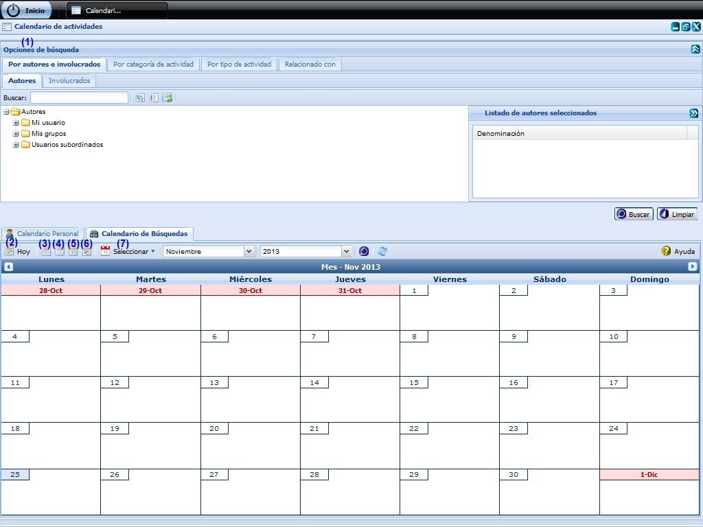
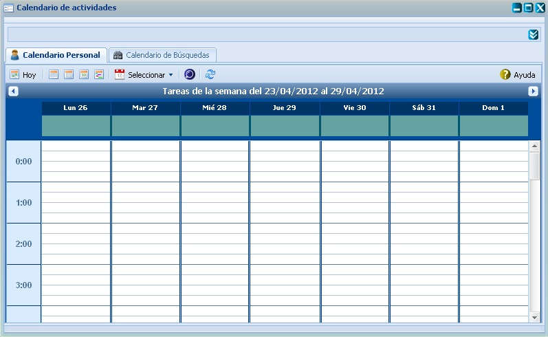
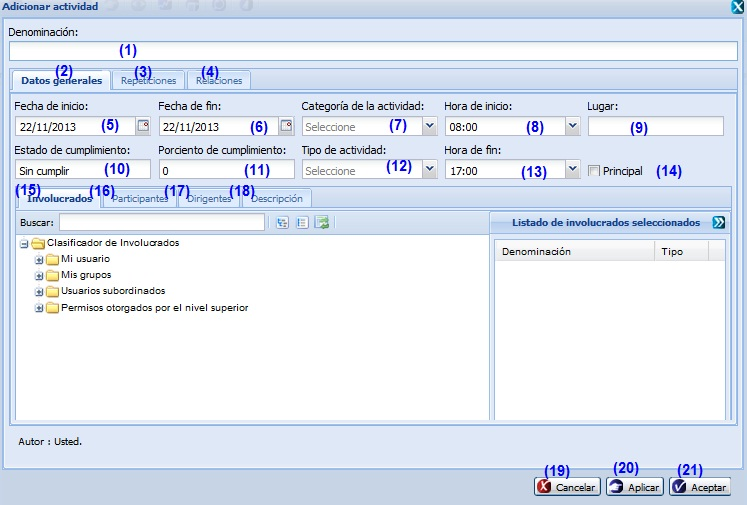

--CALENDARIO DE ACTIVIDADES--
Esta funcionalidad permite realizar la configuración en el Calendario de actividades necesarias para la gestión de planificación de actividades. Para acceder a estas funcionalidades el usuario debe estar autenticado y debe seleccionar la ruta: Inicio/Planificación/Planificación de actividades/Configuración/Calendario de actividades, ver Figura 1.
La interfaz de Calendario de actividades contiene dos secciones horizontales. En la parte superior se muestra el panel para filtro el cual posibilita realizar las operaciones de búsqueda. En la parte inferior se muestra la pestaña nombrada Calendario Personal. En caso de realizarse una búsqueda se mostrará la pestaña nombrada Calendario de búsqueda junto a la pestaña Calendario Personal. El panel Filtro de actividades inicialmente estará oculto, dé clic en el botón con doble saeta que se encuentra en la parte superior derecha para mostrarlo.
La pestaña Calendario Personal mostrará las actividades registradas en el sistema a través de diferentes vistas: mensual, semanal y diaria. A las operaciones que se realizan con el calendario de actividades se puede acceder desde la parte superior de la interfaz.

Las diferentes opciones que conforman la figura anterior permiten:
Opciones de búsqueda
En la interfaz Calendario de actividades con su panel Opciones de búsqueda se muestra activado el botón Buscar. Para realizar una búsqueda de actividades seleccione los datos por los que se va a realizar la búsqueda por filtro. Si desea realizar una búsqueda en la que se muestre como resultado las actividades de determinados involucrados, categorías de la actividad, tipos de actividad o relaciones, realice la selección en los árboles que se muestran en las pestañas Por autor e involucrados, Por categoría de la actividad, Por tipo de actividad y Relacionado con. Se pueden realizar selecciones múltiples en cada pestaña. Una vez especificados los parámetros de búsqueda, puede presionar el botón Aceptar para que el sistema realice la búsqueda. Los resultados se mostrarán en la pestaña Calendario de búsqueda o Calendario personal, en dependencia de cuál de ellos tenga activo en esos momentos.
En cada una de las pestañas ubicada en el panel Opciones de búsqueda se muestran los botones Expandir todas las agrupaciones y Colapsar todas las agrupaciones mediante los cuales puede acceder a las funcionalidades. Estos botones tienen la función de desplegar y contraer la lista de involucrados, de categorías de la actividad, de tipos de actividad o de relaciones respectivamente según sea el caso. Si desea expandir una lista deberá dar clic sobre el botón Expandir, de lo contrario, si lo que desea es contraer una lista deberá dar clic sobre el botón Contraer.Si desea ocultar hacia arriba el panel Opciones de búsqueda deberá dar clic sobre el botón de control  en forma de doble saeta que se le muestra en la parte superior derecha de dicho panel.
en forma de doble saeta que se le muestra en la parte superior derecha de dicho panel.
Hoy
En la interfaz Calendario de actividades tanto en la pestaña Calendario Personal como en la pestaña Calendario de búsqueda podrá observar que se muestra activado el botón Hoy, el cual realiza la misma funcionalidad en cada una de estas pestañas. Presione el botón Hoy y se mostrará en la pestaña actual una nueva vista de calendario de la fecha actual en correspondencia con el tipo de vista de calendario en que se encontraba en el momento en que ejecutó esta operación, pudiendo mostrar las actividades planificadas para el mes actual, la semana actual, o el día actual según sea el caso.
Cambiar a Vista Mensual
En la interfaz Calendario de actividades tanto en la pestaña Calendario Personal como en la pestaña Calendario de búsqueda podrá observar que se le muestra activado el botón Cambiar a Vista Mensual el cual realiza la misma funcionalidad en cada una de estas pestañas. Podrá dar clic sobre el botón Cambiar a Vista Mensual y se le muestra en la pestaña actual una nueva vista de calendario con la planificación de actividades para un mes específico en la cual podrá observar una tabla de siete columnas correspondientes a los siete días de la semana comenzando de domingo al lunes y cinco filas que representan a su vez las cinco semanas que puede contener, como máximo, un mes. En la intersección de una columna y una fila se representan las actividades de un día del mes. Ver figura 2.

Figura 2. Vista Mensual.
Cambiar a Vista Semanal
En la interfaz Calendario de actividades tanto en la pestaña Calendario Personal como en la pestaña Calendario de búsqueda podrá observar que se le muestra activado el botón Cambiar a Vista Semanal el cual realiza la misma funcionalidad en cada una de estas pestañas. Podrá dar clic sobre el botón Cambiar a Vista Semanal y se le mostrará en la pestaña actual una nueva vista de calendario con la planificación de actividades para una semana específica en la cual podrá observar siete columnas correspondientes a los siete días de la semana comenzando de domingo al lunes. Con el color amarillo estará sombreada la columna correspondiente a la fecha actual. Ver figura 3.

Cambiar a Vista Diaria
En la interfaz Calendario de actividades tanto en la pestaña Calendario Personal como en la pestaña Calendario de búsqueda podrá observar que se le muestra activado el botón Cambiar a Vista Diaria el cual realiza la misma funcionalidad en cada una de estas pestañas. Podrá dar clic sobre el botón Cambiar a Vista Diaria y se le mostrará en la pestaña actual una nueva vista de calendario con la planificación de actividades para una día específico, en la cual podrá observar una columna alineada a la izquierda que representa la cantidad de horas del día en las cuales se pueden planificar las actividades. Al representar una actividad planificada en la vista diaria, lo hará en forma de columna y las ubicará a continuación de la columna de horas, creando una columna por separado para cada actividad. Podrá notar una correspondencia entre los valores de la columna: horas con el inicio y el fin del espacio ocupado por la barra que represente a una actividad. Esta correspondencia es una representación gráfica de la hora de inicio y la hora de fin de una actividad determinada enmarcada en la fecha que representa la vista diaria. Ver figura 4.

Figura 4. Vista Diaria.
Cambiar a Vista Diagrama
En la interfaz Calendario de actividades tanto en la pestaña Calendario Personal como en la pestaña Calendario de búsqueda podrá observar que se le muestra activado el botón Cambiar a Vista Diagrama el cual realiza la misma funcionalidad en cada una de estas pestañas. Podrá dar clic sobre el botón Cambiar a Vista Diagrama y se le mostrará en la pestaña actual una nueva vista de calendario con la planificación de actividades para un día específico, en la cual podrá observar un listado de las actividades planificadas en un mes y las repeticiones que puede presentar dicha actividad en cada día del mes.Ver figura 5.

Figura 5. Vista de cronograma.
Seleccionar
En la interfaz Calendario de actividades tanto en la pestaña Calendario Personal como en la pestaña Calendario de búsqueda podrá observar que se le muestra una lista desplegable que presenta por defecto el valor seleccionar, dicha lista realiza la misma funcionalidad en cada una de las pestañas mencionadas. Podrá seleccionar una fecha y se le mostrará en la pestaña actual una vista de calendario que mostrará las actividades planificadas en la fecha seleccionada.
Por otro lado, en cada una de diferentes vistas de calendario que se muestran en las pestañas Calendario Personal y Calendario de Búsqueda se pueden realizar varias operaciones sobre las actividades representadas en estas vistas de calendario como se muestra en la figura 6. Para esto es necesario dar clic secundario en un espacio en blanco del interior de la cualquiera de las vistas de calendario que muestra el sistema.
Figura 6. Acceso a las operaciones del calendario de actividades desde la Vista Diaria.
Si da clic secundario en un lugar en el interior de la vista que no esté representando la distribución temporal de una actividad, podrá observar que se muestra un menú con las opciones: Ir al día siguiente e Ir al día anterior.
Mediante la opción Nueva actividad podrá adicionar una actividad al sistema, teniendo en cuenta todos los pasos necesarios para adicionar una actividad explicados en el Adicionar actividad del acápite Adicionar actividad.
Al presionar la opción Ir al día anterior, se le mostrarán las actividades registradas para el día anterior al que se encontraba situado, de forma igual si presiona la opción Ir al día siguiente, se le mostrarán las actividades registradas para el día siguiente al que se encontraba situado.

Figura 7. Acceso a las operaciones sobre una actividad en el calendario desde la Vista Diaria.
Cuando presione la opción Eliminar actividad le estará indicando al sistema que elimine la actividad, por lo cual el sistema procede a comprobar las mismas condiciones de la funcionalidad Eliminar actividad del acápite Eliminar actividad. La opción Modificar actividad le mostrará una nueva ventana en la que podrá realizar la operación de Modificar la actividad seleccionada, para lo cual el sistema comprueba las mismas condiciones de la funcionalidad en el Modificar actividad del acápite Modificar actividad.
Otra de las funcionalidades que permite realizar el sistema en cada una de las diferentes vistas de calendario que se muestran en las pestañas Calendario Personal y Calendario de Búsqueda es la posibilidad de desplazarse por los calendarios anterior y siguiente de una vista a través de los botones en forma de saeta ubicados en la parte superior de dichas pestañas en la barra nombrada Tareas. Mediante estos podrá consultar las actividades planificadas para el mes anterior o siguiente del mes de la vista actual, para la semana anterior o siguiente de la semana actual, para el día anterior o siguiente al día actual o bien para el cronograma anterior o siguiente del cronograma actual. Lo anterior se realizará según la vista del tipo Mensual, Semanal, Diaria o de Cronograma que esté habilitada respectivamente.
Eliminar actividad
Eliminar una actividad previamente seleccionado en el listado. Esta acción permite eliminar la(las) actividad(es), una vez seleccionada(s) la(las) misma(s) se procede a seleccionar la opción Eliminar de la interfaz, automáticamente se mostrará un mensaje de confirmación, que se puede Aceptar o Cancelar según sea el caso, de presionar la opción Aceptar el sistema le mostrará un mensaje de información sobre el éxito de la operación realizada, quedando eliminada(s) la(las) actividad(es) seleccionada(s), si cancela el mensaje de confirmación, el sistema permanece en la interfaz principal y no elimina la(las) actividad(es). Se puede realizar esta operación seleccionando la columna en el listado y oprimiendo la tecla (Delete). Inicialmente la opción Eliminar de la interfaz estará deshabilitado hasta tanto no se haya seleccionado al menos una actividad.
Modificar actividad
Modificar una actividad previamente seleccionada en el listado. Se mostrará la interfaz con los datos cargados, posibilitando que se modifiquen los que se requieran. La validación de cada uno de los campos de la interfaz será muy similar al descrito en el Acápite Adicionar una actividad. En caso de seleccionar la opción Modificar y no hacer cambios en la información referente a la actividad seleccionado se debe mostrar un mensaje. Este botón estará deshabilitado hasta tanto no se haya seleccionado una actividad.
Adicionar actividad
Se presiona la opción adicionar actividad.Iinmediatamente aparecerá una ventana donde se podrán especificar los datos relacionados con la actividad que se desea adicionar, ver Figura 8.

Las opciones de la figura anterior permiten:
Validación de los campos: